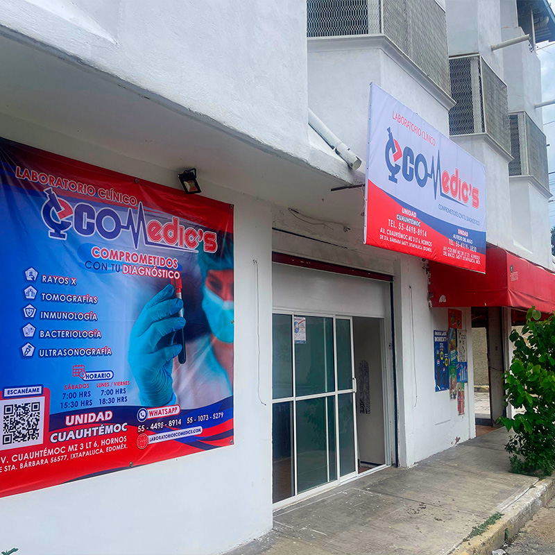
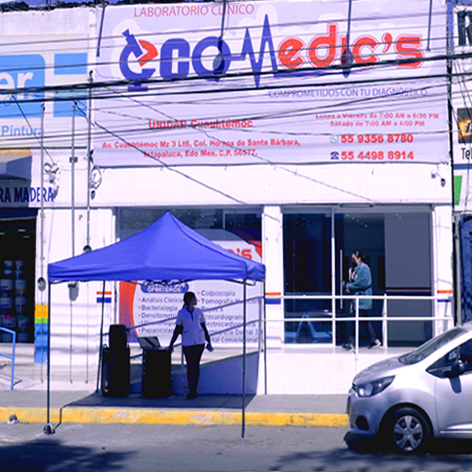
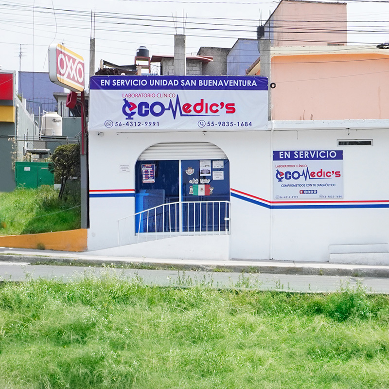
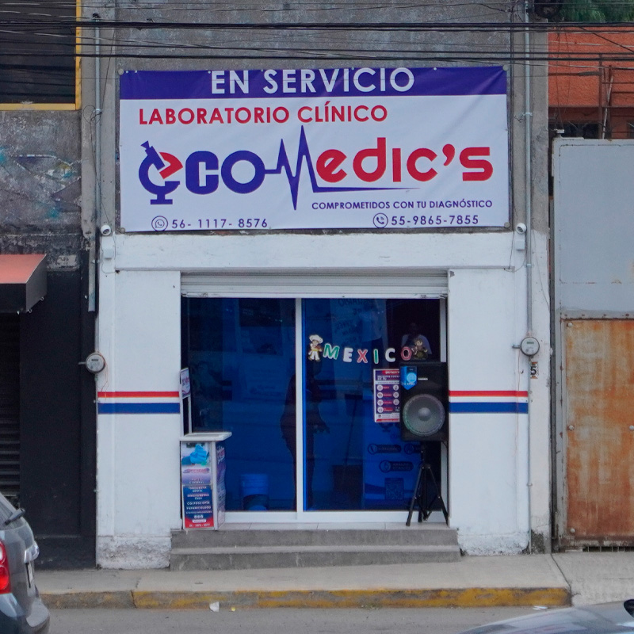

Tu laboratorio de confianza, cerca de ti.
Tu bienestar es nuestra prioridad. En ECO Medic's Ixtapaluca, combinamos tecnología de punta para tus análisis clínicos, rayos X y ultrasonidos, con la atención cálida y humana que te hace sentir seguro. Obtén resultados precisos y claros para cuidar de ti y de los que más quieres.

Nosotros
¿Quiénes Somos?
Laboratorio Clínico ECO Medic's inició ofreciendo servicios en la colonia Alfredo del Mazo, Ixtapaluca, Estado de México, con la convicción de que la salud debe estar al alcance de todos. Creemos firmemente que los servicios de laboratorio no deben concentrarse únicamente en el centro de la ciudad, sino estar cerca y ser accesibles a todas las colonias de nuestra comunidad, manteniendo siempre la calidad y el profesionalismo que nos caracteriza.
Este proyecto surgió al notar que muchas personas no contaban con un laboratorio cercano y accesible, y decidimos ser esa opción confiable, moderna y humana.
Misión
En ECO Medic's, ofrecemos servicios de análisis clínicos con tecnología moderna, resultados precisos y atención rápida y confiable. Nuestro compromiso es apoyar el bienestar y diagnóstico oportuno de cada paciente, brindando una experiencia accesible y de calidad.
Visión
Ser el laboratorio líder en Ixtapaluca reconocido por su innovación, precisión y confianza, posicionándonos como la primera opción para el público que busca resultados clínicos rápidos, confiables y respaldados por un servicio humano y profesional.
Valores y Compromisos
Confianza
Basamos nuestro trabajo en la ética profesional, la transparencia y el respeto hacia cada paciente.
Responsabilidad
Actuamos con integridad y compromiso hacia nuestros pacientes, colaboradores y comunidad.
Empatía
Atendemos con calidez y respeto, brindando al paciente una experiencia humana y profesional.
Innovación
Mantenemos una actualización continua en métodos y tecnología para ofrecer servicios clínicos de vanguardia.
Precisión
Ejecutamos cada procedimiento con rigor técnico y control de calidad para garantizar resultados exactos y confiables.
Rapidez
Nos comprometemos a entregar resultados oportunos, entendiendo la importancia del tiempo en el cuidado de la salud.
Nuestros Servicios
RADIOLOGÍA

- Rayos X Convencional
- Mastografía Bilateral
- Densitometría Ósea
- Tomografía Computarizada (TAC)
- Resonancia Magnética
LABORATORIO

- Análisis Clínicos
- Bacteriología
- Colposcopia y Papanicolaou
- Histopatología
- Toxicología
- Citología Exfoliativa
ULTRASONOGRAFÍA

- Ultrasonido Convencional
- Musculoesquelético
- Obstétrico Estructural
- Ultrasonido 4D
- Ultrasonido Doppler
CARDIOLOGÍA

- Ecocardiograma (ECO)
- Electrocardiograma (ECG)
- Monitoreo Ambulatorio de Presión Arterial (MAPA)
NEUROLOGÍA

- Electroencefalograma (EEG)
DENTAL

-
Rayos X Dentales
Ver más- Rx Panorámica
- Rx Periapical
- Rx Lateral de cráneo
- Rx Oclusal
- Rx Cráneo AP o PA
- Rx Articulación Temporomandibular
- Rx Mano Carpal
- Tomografía Dental
-
Paquetes Dentales (Ortodoncia)
Ver más- Rayos X
- Fotografía
- Escaneo Intraoral
- Trazos Cefalométricos
- Modelo Digital/Yeso
PATOLOGÍA

- Histopatología
- Citología Exfoliativa
MEDICINA INTERVENCIONISTA

- Toma de Biopsias
ESPECIALES

- Mapeo cerebral
- Endoscopia y colonoscopia
- Androscopía
Nuestras Sucursales

Unidad Alfredo del Mazo
Av. Colibrí Mz. 30 Lt. 21, Col. Alfredo del Mazo, Ixtapaluca, C.P. 56577 Edo. Méx.
Teléfono: 55 4119 5830
WhatsApp: 55 1073 5279
Horarios de Atención
Lunes a Viernes, de 7:00 a 18:00
Sábados de 07:00 a 15:30

Unidad Cuauhtémoc
Av. Cuauhtémoc Mz. 3 Lt. 6, Col. Hornos de Santa Bárbara, Ixtapaluca, C.P. 56577, Edo. Méx.
Teléfono: 55 9356 8780
WhatsApp: 55 4498 8914
Horarios de Atención
Lunes a Viernes, de 7:00 a 18:00
Sábados de 07:00 a 15:30

Unidad San Buenaventura
Av. Paseo de Los Volcanes Lt. 66, Col. San Buenaventura, Ixtapaluca, C.P. 56536, Edo. Méx.
Teléfono: 55 9835 1684
WhatsApp: 56 4312 9991
Horarios de Atención
Lunes a Viernes, de 7:00 a 18:00
Sábados de 07:00 a 15:30

Unidad Ayotla
Av. Cuauhtémoc Lt. 3, Col. Ayotla, Ixtapaluca, C.P. 56560, Edo. Méx.
Teléfono: 55 9865 7855
WhatsApp: 56 1117 8576
Horarios de Atención
Lunes a Viernes, de 7:00 a 16:00
Sábados de 07:00 a 15:30
#IxtapalucaEsEcomedics
Compromiso por Nuestra Comunidad
Estamos orgullosos de haber nacido en Ixtapaluca y de crecer junto a su gente, fortaleciendo la salud y bienestar de nuestra comunidad.
Regularmente realizamos jornadas gratuitas y promociones con descuentos, acercando la salud a quienes más lo necesitan. Buscamos que todos nuestros pacientes tengan acceso a diagnósticos de calidad, sin importar su ubicación o situación económica.